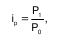
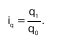

| Индекс (лат. Index) – это относительная величи–на, показывающая, во сколько раз уровень изучаемого явления в данных условиях отличается от уровня того же явления в других условиях. Различие условий мо–жет проявляться во времени, в пространстве и в выбо–ре в качестве базы сравнения какого-либо условного уровня. По охвату элементов совокупности различают индексы индивидуальные и сводные, которые делятся на общие и групповые. Индивидуальные индексы – это результат сравнения двух показателей, относящихся к одному объекту. В статистико-экономическом анализе дея–тельности предприятий и отраслей широко применя–ются индивидуальные индексы качественных и коли–чественных показателей. Определяются по формуле:  Индекс цен характеризует относительное изме–нение уровня цены единицы каждого вида продукции в отчетном периоде по сравнению с базисным и являет–ся качественным показателем. Индекс физического объема определяется по формуле:  Сводный индекс характеризует соотношение уровней нескольких элементов совокупности. Если изучаемая совокупность состоит из нескольких групп, то сводные индексы, каждый из которых характеризует изменение уровней отдельной группы единиц, являются групповыми (субиндексами), а свод–ный индекс, охватывающий всю совокупность единиц, – общим (тотальным) индексом. Сводные индексы выра–жают соотношение сложных социально-экономических явлений и состоят из двух частей: 1) из индексируемой величины; 2) из соизмерителя, который называется весом. Показатель, изменение которого характеризует ин–декс, называется индексируемым. Индексируемые пока–затели могут быть двоякого рода. Одни из них измеряют общий, суммарный размер (объем) того или иного явле–ния и условно называются объемными, экстенсивными. Эти показатели получаются как итог непосредственного подсчета или суммирования и являются исходными, первичными. Другие показатели измеряют уровень явления или признака в расчете на ту или иную единицу совокупно–сти и условно называются качественными, интенсив–ными: выработка продукции в единицу времени (или на одного работника), затраты рабочего времени на единицу продукции, себестоимость единицы продукции и т. д. Эти показатели получаются путем деления объемных пока–зателей, т. е. носят расчетный, вторичный характер. Они измеряют интенсивность, эффективность явления или процесса и, как правило, являются либо средними, ли–бо относительными величинами. |